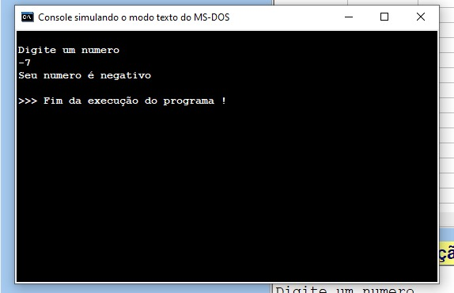
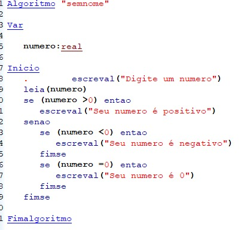
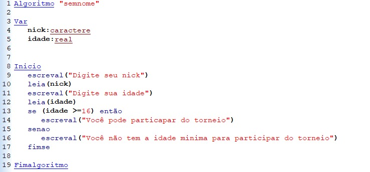
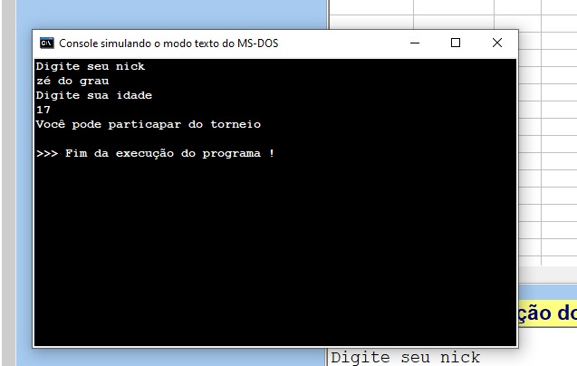

A disciplina de Algoritmos é ministrada pelo Professor Moreno, com foco no desenvolvimento do raciocínio lógico e na resolução estruturada de problemas computacionais.
O professor enfatiza a construção passo a passo dos algoritmos, a interpretação correta dos enunciados e a organização do código.
Um algoritmo é uma sequência finita de passos organizados logicamente para resolver um problema.
O comando escreval é utilizado para organizar melhor a saída, pois após exibir a mensagem ele automaticamente pula para a próxima linha.
Variáveis armazenam dados na memória. Em C possuem tipo definido (int, float), já em JavaScript a tipagem é dinâmica.
O comando if / else permite que o programa tome decisões com base em condições lógicas.
Exemplo 1: Verificando se o número é par, impar ou negativo.


Exemplo 2: Verificando se o aluno pode participar de um torneio (idade mínima).


🔗 Exercício: Verificar número par ou ímpar e se é positivo ou negativo:
http://logicasdeprogramacao.blogspot.com/2011/06/ex-05-numero-e-par-ou-impar-e-se-e.html
🔗 Exercício interativo com exemplos e explicações em Portugol:
https://alexandria-html-published.platosedu.io/16ac6071-3df3-4021-90e9-1d7caf2db65d/v1/index.html
As estruturas for e while repetem instruções várias vezes conforme uma condição.
Vetores armazenam múltiplos valores do mesmo tipo em uma única estrutura organizada por índices.
Algoritmos de ordenação organizam dados em ordem crescente ou decrescente, como o método Bubble Sort.